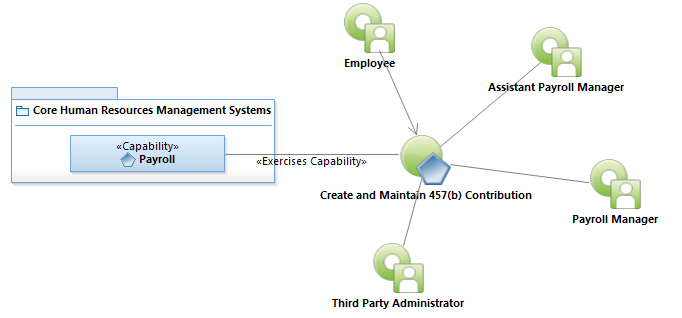
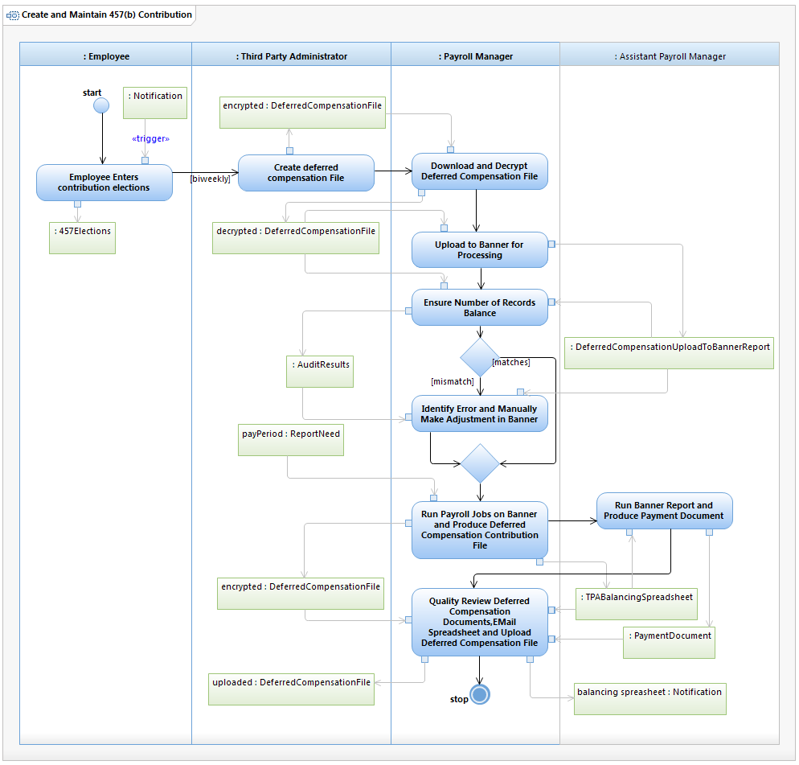

Use Case Model: Create and Maintain 457(b) Contribution
Architect: Aaron Brown, IT Enterprise Architect Senior
Date Last Modified: 11/13/2012
User Review: Ingrid Whitley, Payroll Manager
Date: mm/dd/yyyy
The employee determines their deduction elections, by phone, form, or web site. An encrypted file is downloaded by the payroll manager for the City of Austin with the contributions/elections to be imported into Banner. These contributions will be deducted from the employee's paycheck. Biweekly a deduction file is sent to the third party.
Follow link to Role Definitions

Use Case Model: Create and Maintain 457(b) Contribution

Activity Model: Create and Maintain 457(b) Contribution